POD Analysis of Turbulent Pipe Flow
M. Raba
Created: 2025-10-06 Mon 07:20
Background and Motivation
Literature Review
- Simple geometry, yet rich in turbulent dynamics
- Ideal for studying rotation-induced turbulence suppression
- Relevant to aerospace, combustion, and industrial flows
- Rotation reduces skin friction and pressure loss
- Experiments (e.g., White 1964, Kikuyama et al. 1983) showed relaminarization at high rotation rates
- Limited DNS studies at moderate-to-high Reynolds numbers
- RANS/LES models struggle to capture suppression mechanisms
- Use DNS to quantify turbulence suppression
- Apply POD to identify dominant coherent structures
- Provide benchmark data for turbulence model validation
DNS Turbulent Model
- Viscous terms: BDF3 (implicit)
- Nonlinear terms: Explicit extrapolation (3rd order)
- Radial: 0.14–4.4 (Re = 5300), 0.16–4.7 (Re = 11,700)
- Azimuthal: 1.5–5.0
- Streamwise: 3.0–9.9
Background: Rotating Pipe Flow & Relaminarization
Scientific Context
- Rotating pipe flow is a canonical system for studying flow stabilization and relaminarization.
- Rotation modifies turbulence production and redistributes momentum through Coriolis and centrifugal effects.
- Relaminarization occurs when rotation suppresses the near-wall turbulence regeneration cycle.
Key Phenomena
- Competition between destabilizing wall shear and stabilizing radial pressure gradients.
- Reduction in Reynolds stresses and near-wall streaks at high rotation rates.
- Relaminarized or quasi-laminar states can persist at high Reynolds numbers.
DNS, Theory, and Modal Decomposition
DNS and Analytical Foundations
- DNS captures relaminarization at Re = 10⁴–10⁵ under rotation.
- Scaling and symmetry analyses (Oberlack, 1999; 2001) relate turbulence structure to invariants.
- Hellström et al. (2017) provide reproducible experimental and DNS methodology for relaminarization.
Modal Analysis (POD)
- Proper Orthogonal Decomposition (POD) identifies energy-dominant coherent structures.
- Developed by Lumley (1967); extended by Taira et al. (2017) for complex turbulent systems.
- Recent studies (Brehm 2019; Ashton 2019) combine DNS and POD for energy transfer diagnostics.
Control & Transition Mechanisms
Mechanistic Understanding
- Rotation alters the balance of production and dissipation terms in the turbulent kinetic energy budget.
- Flow control studies show relaminarization through imposed swirl or wall rotation.
- Experimental relaminarization occurs by suppression of near-wall vortices and streak breakdown.
Recent Advances
- Kühnen et al. (2014, 2018) demonstrated full relaminarization through wall rotation and suction control.
- These results motivate DNS-based exploration of transient energy transfer and POD modal evolution.
- Ongoing studies bridge classical rotation control and modern data-driven modal analysis.
Method Spectral Element Direct Numerical Simulation (DNS)
Slide 1: Introduction
Background
- Transition and relaminarization in rotating pipe flows depend on rotation rate and Reynolds number.
- Relaminarization can occur when imposed swirl suppresses near-wall turbulence production.
- Applications: rotating heat exchangers, turbomachinery, compact fluid systems.
Governing Equations
\begin{align} \nabla \cdot \mathbf{u} &= 0, \\ \frac{\partial \mathbf{u}}{\partial t} + (\mathbf{u}\cdot\nabla)\mathbf{u} &= -\frac{1}{\rho}\nabla p + \nu \nabla^2 \mathbf{u} - 2 \boldsymbol{\Omega}\times\mathbf{u} \end{align}References: Alfredsson & Persson (1989)[1], Johnston et al. (1972)[2]
Slide 2: Spectral Element Method (DNS)
Simulation Setup
- Circular pipe: D=1, L=12D
- Re = 5300, 12700, non-slip wall
- Legendre basis, polynomial order 6
- Non-uniform mesh finer near wall to capture Kolmogorov/Taylor scales
Navier-Stokes in Cylindrical Coordinates
\begin{align} \frac{\partial w}{\partial t} + w \frac{\partial w}{\partial r} + \frac{v}{r} \frac{\partial w}{\partial \theta} + u \frac{\partial w}{\partial x} - \frac{v^2}{r} &= -\frac{1}{\rho} \frac{\partial p}{\partial r} + \nu \left(\mathcal{D} w - \frac{w}{r^2} - \frac{2}{r^2}\frac{\partial v}{\partial \theta} \right) - 2\Omega v \\ \frac{\partial v}{\partial t} + w \frac{\partial v}{\partial r} + \frac{vw}{r} + \frac{v}{r} \frac{\partial v}{\partial \theta} + u \frac{\partial v}{\partial x} &= -\frac{1}{\rho r} \frac{\partial p}{\partial \theta} + \nu \left(\mathcal{D} v - \frac{v}{r^2} + \frac{2}{r^2}\frac{\partial w}{\partial \theta} \right) + 2\Omega w \\ \frac{\partial u}{\partial t} + w \frac{\partial u}{\partial r} + \frac{v}{r} \frac{\partial u}{\partial \theta} + u \frac{\partial u}{\partial x} &= -\frac{1}{\rho} \frac{\partial p}{\partial x} + \nu \mathcal{D} u \end{align}References: Kundu (2015)[3], Hellström et al. (2017)[4]
Slide 3: Mesh and Simulation Details
Mesh Details
- Non-uniform grid denser near walls
- Grid spacings (y+) for streamwise extent of 15D
- Example: Re=5300, Δr⁺=0.14–4, Δθ⁺=1.5–4.5, Δz⁺=3–9.9
Boundary Conditions
\begin{align} u_r(R) &= 0, \\ u_\theta(R) &= \Omega R, \\ u_x(R) &= 0 \end{align}Rotation vector: Ω = Ω e_k; smooth wall, incompressible flow
[2] Johnston et al., 1972.
[3] Kundu, 2015, Fluid Mechanics.
[4] Hellström et al., 2017, J. Fluid Mech. 829:164–188.
DNS Mesh
Simulation Domain
- Circular pipe, D = 1, L = 12D
- Reynolds numbers: 5300, 12700
- Non-slip at walls, periodic at inlet/outlet
- Spectral element method: Legendre basis, order l = 6
Governing Equations
\begin{align} \nabla \cdot \boldsymbol{u} &= 0 \\ \frac{\partial \boldsymbol{u}}{\partial t}+ (\boldsymbol{u}\cdot\nabla)\boldsymbol{u} &= -\nabla p + \frac{1}{Re} \nabla^2 \boldsymbol{u} \end{align}Mesh Images
Non-uniform mesh (finer near walls)
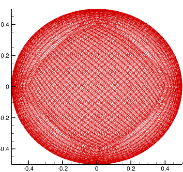
Uniform, interpolated mesh for POD analysis
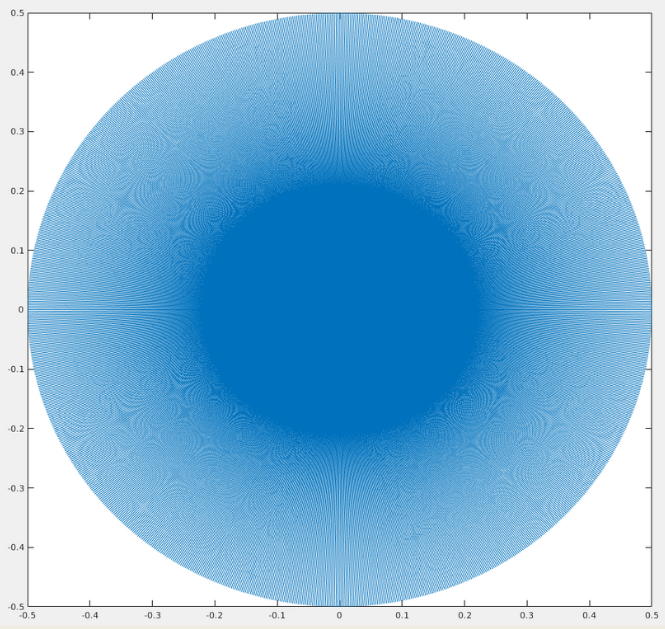
Grid Spacing and Boundary Conditions
Grid Spacings (y⁺ units)
| Re | Δr⁺ / Δθ⁺ / Δz⁺ | N Δt × 10⁶ |
|---|---|---|
| 5,300 | 0.14–4 / 1.5–4.5 / 3–9.9 | 20 |
| 11,700 | 0.15–4.5 / 1.5–4.8 / 3–10 | 120 |
Boundary Conditions
\begin{align} u_r(R) &= 0, \\ u_\theta(R) &= \Omega R, \\ u_x(R) &= 0 \end{align}Rotation vector: Ω = Ω e_k; smooth wall; incompressible flow
Proper Orthogonal Decomposition
POD Energy Modes
(2.1) Radial eigenvalue problem:
$$ \int S(k, m; r, r') \, \Phi_n(k, m; r') \, r' \, dr' = \lambda_n(k, m) \, \Phi_n(k, m; r) $$(2.2) Cross-correlation tensor:
$$ S(k, m; r, r') = \lim_{\tau \to \infty} \frac{1}{\tau} \int_0^\tau \mathbf{u}(k, m; r, t) \, \mathbf{u}^*(k, m; r', t) \, dt $$(2.3) POD coefficient projection:
$$ \alpha_n(k, m; t) = \int \mathbf{u}(k, m; r, t) \, \Phi_n^*(k, m; r) \, r \, dr $$(2.4) Time-domain eigenvalue problem:
$$ \int R(k, m; t, t') \, \alpha_n(k, m; t') \, dt' = \lambda_n(k, m) \, \alpha_n(k, m; t) $$(2.5) Mode reconstruction:
$$ \int \mathbf{u}^T(k, m; r, t) \, \alpha_n^*(k, m; t) \, dt = \Phi_n^T(k, m; r) \, \lambda_n(k, m) $$(2.6) Conditional mode definition:
$$ \Psi_n(m; \xi, r) = \lim_{\chi \to \infty} \frac{1}{\chi} \int_0^\chi \int_0^\tau \mathbf{u}^T(m; r, x+\xi, t) \, \alpha_n(m; x, t) \, dt \, dx $$FFT / POD Interpretation
Azimuthal FFT:
- Exploits rotational symmetry of the pipe
- Azimuthal mode number m defines spanwise length scale
- Highlights circumferential structure and periodicity
Streamwise FFT:
- Captures axial periodicity and wavelength
- Mode number k relates to streamwise extent of structures
- Useful for identifying repeating patterns like VLSMs
Why FFT?
- Geometry-driven decomposition
- Modes are known a priori due to symmetry
- Accelerates POD convergence
Nature of POD Modes:
- Data-driven: extracted from simulation or experiment
- Ranked by energy content (most energetic first)
- Capture coherent structures across scales
Snapshot POD:
- Assumes separability of space and time
- Reduces computational cost by working in time domain
- Enables modal analysis of large datasets
Complementarity:
- FFT modes reflect geometry
- POD modes reflect physics and energy distribution
- Combined FFT-POD approach enhances interpretability
Proper Orthogonal Decomposition (POD)
POD Overview
- Decomposes turbulent velocity field to a reduced order model (ROM)
- Orthogonal basis captures dominant flow patterns 1
- Snapshot POD faster convergence than classical POD
- Hybrid FFT-POD: Fourier modes in θ, POD in radial direction
Snapshot POD: Hilbert Space
Snapshot POD: Eigenvalue Problem
Direct POD Equation
Temporal Coefficients
Classical POD Form
Correlation Tensor
Time Coefficient
Radial Projections
POD Mode Behavior at N = 0
- Rotation Number: N = 0 (non-rotating pipe)
- Flow Regime: Classical turbulent pipe flow
- Azimuthal Modes: m = 2 to 36
- Radial Profiles: Symmetric, peak away from wall
- Conditional Modes: Show coherent structures aligned with streamwise direction
- Interpretation: Near-wall turbulence is strong; structures are well-developed and span the pipe radius
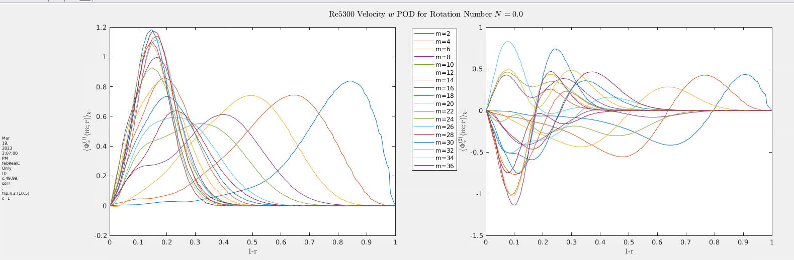
POD Mode Behavior at N = 1
- Rotation Number: N = 1 (moderate rotation)
- Swirl Number: Ratio of azimuthal to axial momentum flux; quantifies rotational intensity
- Flow Regime: Transitional toward relaminarization
- Azimuthal Modes: m = 2 to 36
- Radial Profiles: Begin to shift inward; near-wall peaks flatten
- Azimuthal Structure: Enhanced swirl due to Coriolis effects
- Interpretation: Rotation suppresses near-wall turbulence and redistributes energy toward the core
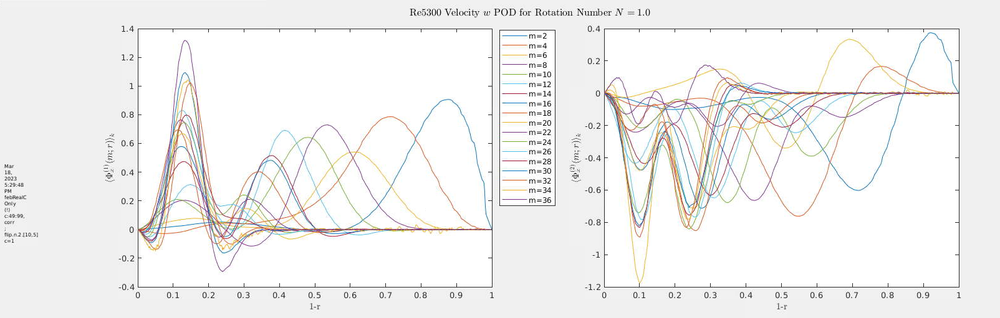
N=3
- Rotation Number: N = 3 (strong rotation)
- Swirl Number: High azimuthal momentum; dominant rotational effects
- Flow Regime: Strong turbulence suppression; approaching relaminarization
- Azimuthal Modes: Energy concentrated in low modes (m = 5–20)
- Radial Profiles: Streamwise structures shift closer to wall; radial structures broaden
- Azimuthal Structure: Reduced wall-normal extent; secondary peaks emerge
- Interpretation: Rotation reorganizes turbulence, suppresses near-wall activity, and enhances core coherence
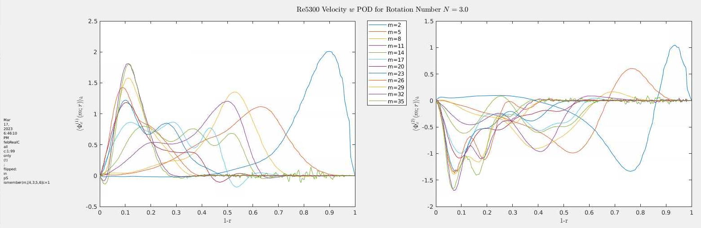
FFT-POD Mode Shapes
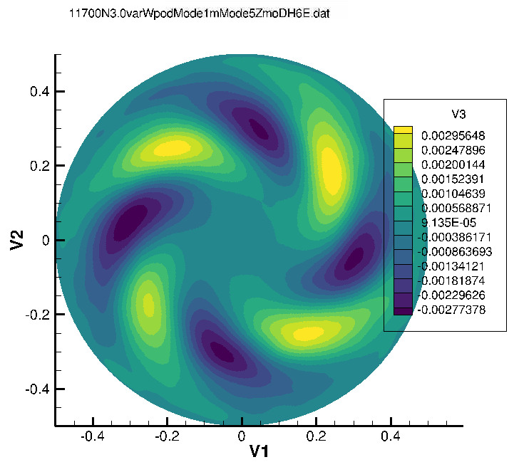
Coherent structure with 5-lobed symmetry; strong modal energy concentration.
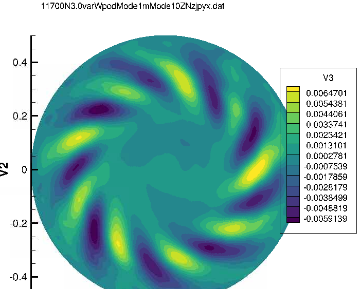
Finer-scale oscillatory structure; reduced energy per mode compared to m = 5.
Radial POD Modes
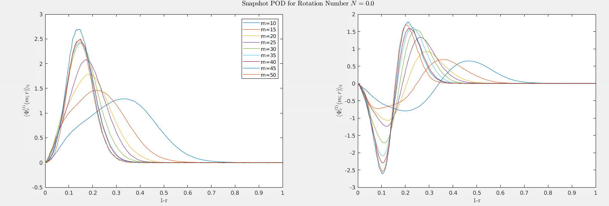
Figure 1: \(N=0.0\) Radial POD Azimuthal Modes
\(N=0.5\)
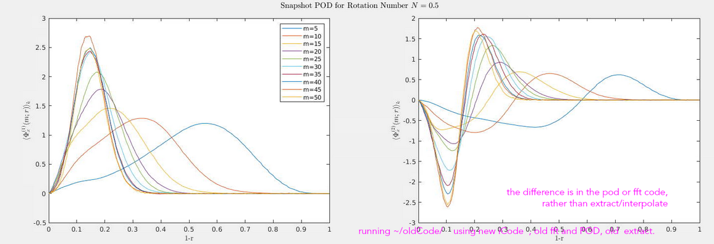
Figure 2: \(N=0.5\) Radial POD Azimuthal Modes
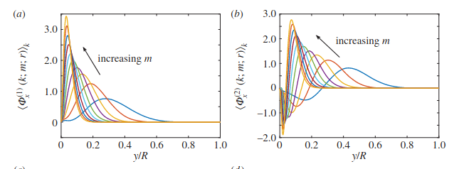
Figure 3: Ref (Hellstrom 2017 Benchmark)
\(N=3\)
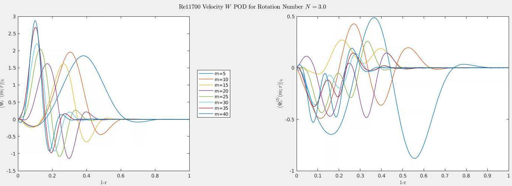
Figure 4: \(N=3\) Radial POD Azimuthal Modes
Rotating Pipe POD Results
Rotating Pipe POD Results — POD Theory & 2D Projection
POD Modes & 2D Projection
- Azimuthal modes m ∈ [1,30]
- Streamwise-invariant, averaged along x
- Phase-flipped to ensure consistent ±1 orientation
- FFT in θ direction for radial profiles
Radial Modal Profile Equation
2D POD Projection Example
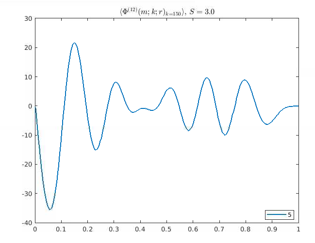
Modal Profile φ²
Streamwise Component φ², S=3.0

Modal Profile φ³
Streamwise Component φ³, S=3.0
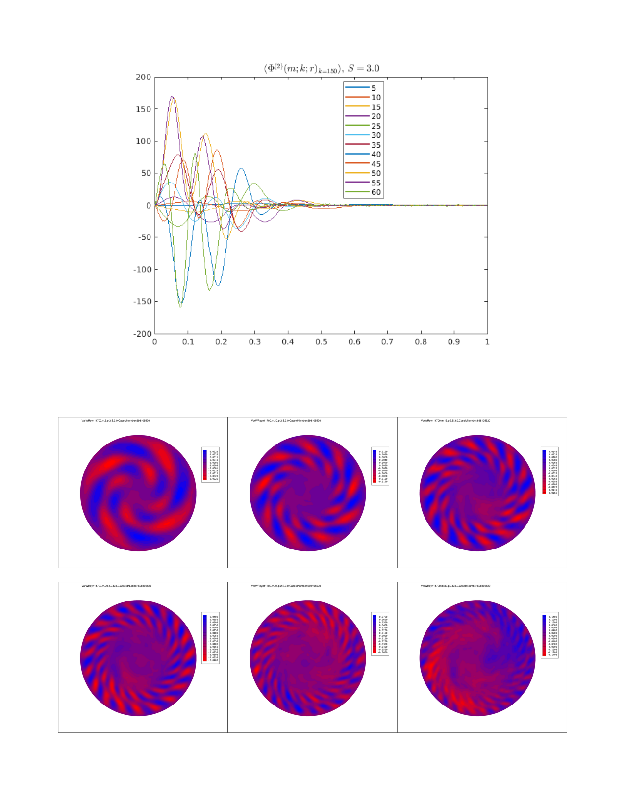
Modal Profile φ⁴
Streamwise Component φ⁴, S=3.0
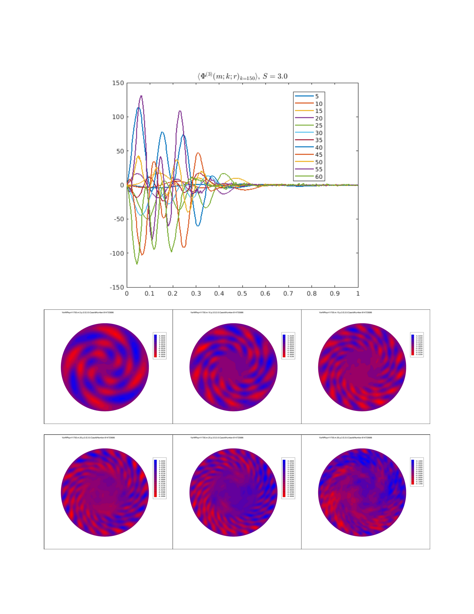
Derivation of POD
Derivation of POD Projections

Citations
- White (1964), J. Fluid Mech. — early rotating pipe flow experiments.
- Kikuyama et al. (1983), JSME Int. J. — visualization of relaminarization under rotation.
- Imao (1996), Exp. Fluids — centrifugal stabilization and mean profiles.
- Orlandi & Fatica (1997), J. Fluid Mech. — first DNS of rotating pipe turbulence.
- Feiz & Tavoularis (2005), Phys. Fluids — DNS of turbulent pipe under rotation.
- Hellström et al. (2017), Phys. Rev. Fluids — experimental/DNS methodology for relaminarization.
Citations
- Oberlack (1999; 2001), J. Fluid Mech. — scaling and symmetry theory for turbulence structures.
- Lumley (1967), Atmos. Turbulence — original POD formulation.
- Taira et al. (2017), AIAA J. — POD extensions to complex turbulent systems.
- Brehm (2019) — DNS + POD energy transfer diagnostics.
- Ashton (2019) — DNS + POD studies.